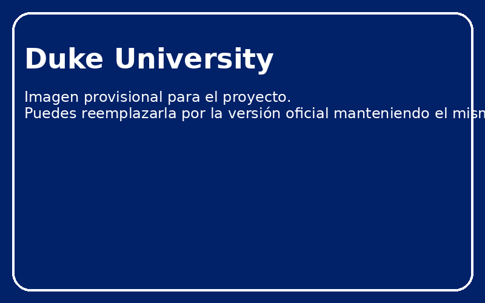

ESTUDIOS DE GRADO
Duke University
Licenciatura en Matemáticas. Formación centrada en razonamiento analítico y fundamentos matemáticos.
ESTUDIOS DE POSGRADO
Carnegie Mellon University
Doctorado en Ciencias de la Computación; su investigación abordó la computación humana. También cursó estudios de posgrado en esta institución.
RECONOCIMIENTOS Y FORMACIÓN CONTINUA
Reconocimiento por innovación
Ha recibido reconocimiento público por sus aportes a la tecnología y al emprendimiento. Esta sección debe ampliarse con premios concretos cuando se incorporen fuentes verificadas; no se inventan cursos o certificaciones.
Resumen académico
| Institución | Título | Años | Enfoque |
|---|---|---|---|
| Duke University | Licenciatura en Matemáticas | Hasta 2000 | Matemáticas y razonamiento analítico |
| Carnegie Mellon University | Doctorado en Ciencias de la Computación | 2000–2005 aprox. | Computación e investigación |
Las fechas se presentan de forma aproximada de acuerdo con la información biográfica disponible.